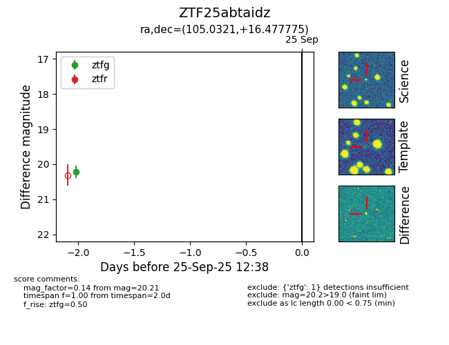

FINK: ZTF25abtaidz
Lasair: ZTF25abtaidz
ALeRCE: ZTF25abtaidz
ZTF25abtaidz (ztf,fink)
equatorial (ra, dec) = (105.0321,+16.47777)
galactic (l, b) = (199.1040,+9.30506)

last ztfg=20.21
1 ztfg detections